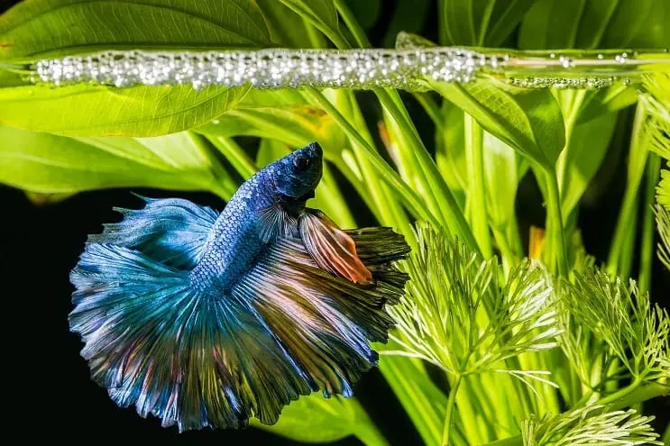
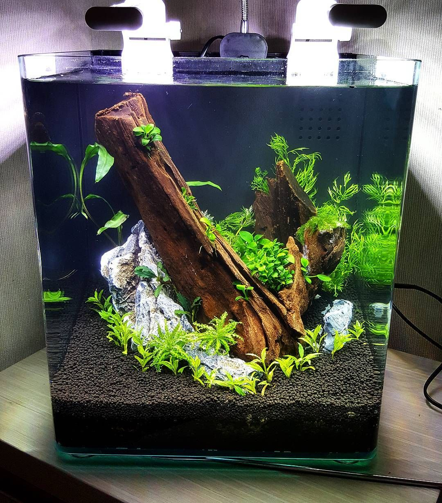

Plants:

Although Live plants aren't necessary for a betta, its best to simulate a real environment.
Live plants offer numerous benefits to your aquarium such as lowering your nitrates.
Plants are extremely important for a fish to have hiding places for it not to feel stressed out.
Top 5 Live Plants:
- Java Fern
- Hornwort
- Cabomba
- Java Moss
- Anubias
